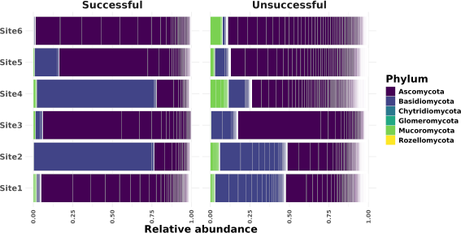

Transplanting microbiomes is a promising intervention for increasing plant and ecosystem health, but it doesn't always work.
We are using simulations to better understand the ecological processes that influence success or failure of microbiome transplantation, where a whole community is added to a pre-existing recipient community.

We investigate the roles that microbial communities play in shaping plant and ecosystem health.
Using model systems like Arabidopsis thalliana, and simplified microbial communities, we are tracking how beneficial microbes can alter plant stress response and shape ecosystem conservation and recovery.

We are harnessing public data and collecting our own time-series of metagenomic data to better understand the diversity, distribution, and functional roles of marine fungi.
Marine fungi are terribly understudied, yet likely have important contributions to oceanic populations of phytoplankton and the marine carbon cycle.